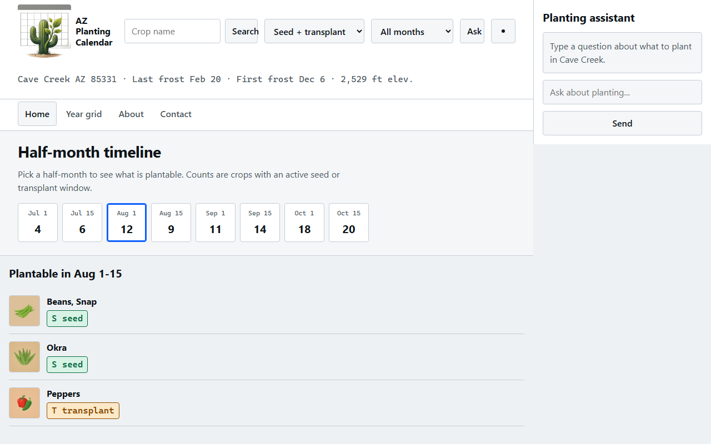
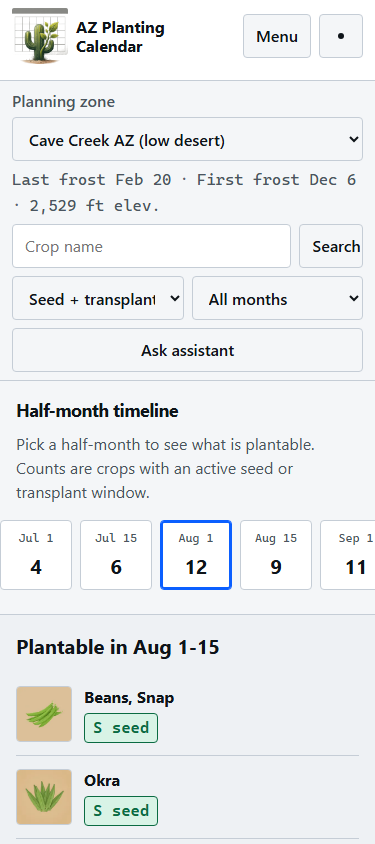
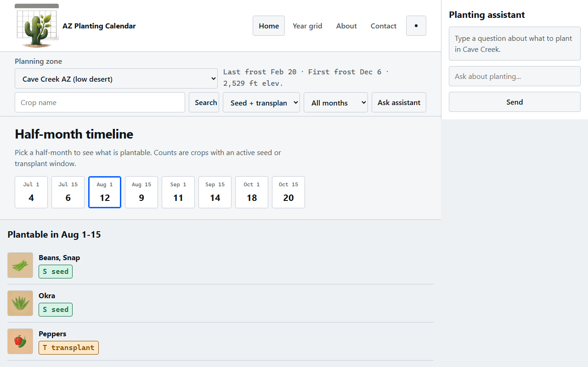
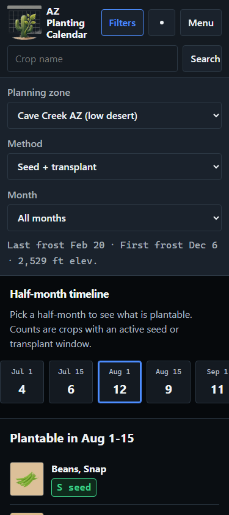

01 Command bar
One sticky band: brand + search owns the centre; method, month, zone, and Ask collapse into the same chrome.
Primary nav as a second strip on desktop / menu on mobile. Assistant rail on desktop.
Separable: centre search · inline method/month · zone as mono line · Ask button
search y 375: 72 · 1280: 34
mark h 375: 56 · 1280: 96
truncated @375: 0
timeline space above fold: 502 (375) / 564 (1280)
Cost: densest single band -- method/month/zone wrap under search on a phone, so the bar is still tall at 375 even though everything is one chrome piece.




02 Two-tier sticky
Tier A: brand + primary nav + theme. Tier B: zone selector, frost context, search, method/month, Ask -- sticks under tier A.
Clearest separation of wayfinding vs planning controls.
Separable: identity tier · zone row · filter/search strip · Ask entry
search y 375: 224 · 1280: 201
mark h 375: 56 · 1280: 96
truncated @375: 0
timeline space above fold: 463 (375) / 546 (1280)
Cost: two sticky bands eat the most vertical chrome before the timeline on phone; search sits lowest (y 224 at 375) even though it is still above the fold.




03 Compact drawer + dock
Minimal top bar: brand, search, Filters toggle, theme, menu. Zone + method + month open in an expandable drawer.
Assistant is a persistent docked panel (desktop rail always open; mobile full-width dock under content, not a FAB).
Separable: compact bar · filter drawer · docked assistant panel
search y 375: 74 · 1280: 34
mark h 375: 56 · 1280: 96
truncated @375: 0
timeline space above fold: 392 (375) / 534 (1280)
Cost: with the drawer open (as framed), this is the tallest header at 375 and leaves the least timeline space above the fold; zone/frost hide when the drawer is closed, so frost context is not always visible.

